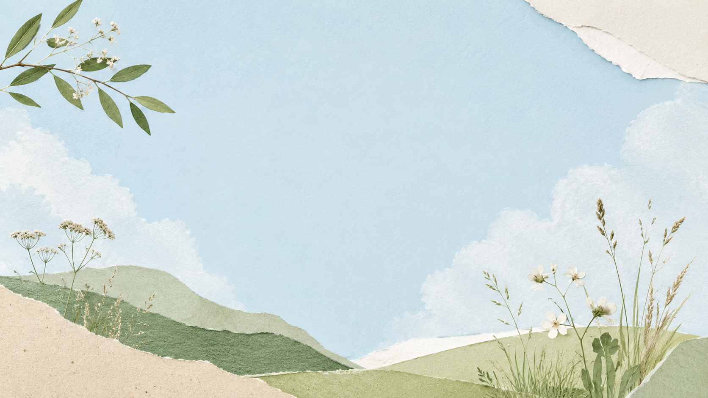
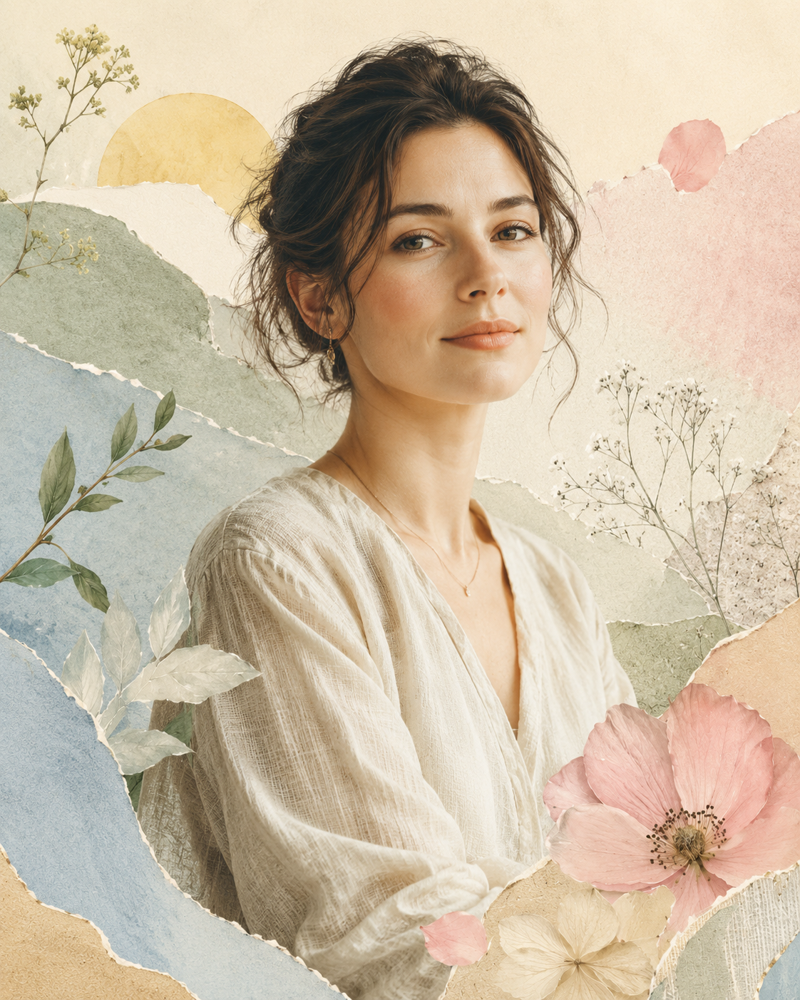

Personal Brand Portfolio
Artemisia Vale
Visual style, conceptual thinking, and complete project execution.
View ProjectsSelected Collage Works
Projects



About
Artemisia Vale
Artemisia Vale weaves together a natural handmade collage sensibility with a disciplined conceptual framework. Each work embodies tactile depth, subtle poetic rhythm, and a refined visual hierarchy, moving seamlessly from idea to fully realized project. Through layered textures, organic forms, and considered color, she creates visual systems that invite contemplation, reflect intentionality, and reveal the intersection of materiality and conceptual rigor. My portfolio demonstrates a commitment to translating ideas into complete visual narratives, balancing elegance with expressive nuance, and creating works that resonate with both the eye and the intellect.